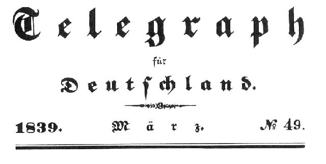

Press Articles by Marx and Engels
Articles by Engels in 
May 1839 - December 1841
Source: MECW Volume 2;
Transcribed: Andy Blunden;
Title
Date
Letters from Wuppertal Mar 1839 Mar 1839 Mar 1839 Mar 1839 Mar 1839 Apr 1839 Apr 1839 F. W. Krummacher's Sermon on Joshua May 1839 From Elberfeld Nov 1839 German Volksbucher Nov 1839 Karl Beck Dec 1839 Retrograde Signs of the Times Feb 1840 Platen Feb 1840 Joel Jacoby Apr 1840 Requiem for the German Adelszeitung Apr 1840 On Anastasius Grun Apr 1840 Landscapes Jul 1840 Aug 1840 An Evening Aug 1840 Two Sermons by F. W. Krummacher Sep 1840 St. Helena Nov 1840 Siegfried's Native Town Dec 1840 Ernst Moritz Arndt Jan 1841 The Emperor's Procession Feb 1841 Immermann's Memorabilien Apr 1841 Schelling on Hegel Dec 1841 — History of the English Corn Laws Dec 1845